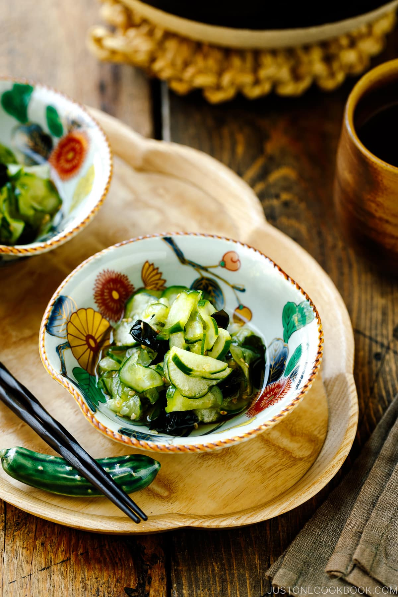

Home
Japanese Cucumber Salad (Sunomono) 酢の物

For a light and incredibly refreshing side dish, try my classic Japanese Cucumber Salad (Sunomono) recipe. This crunchy salad with wakame seaweed and sweet-and-sour dressing goes with any Japanese meal.
When cucumbers are at their peak in gardens and markets, we often make this refreshing Japanese Cucumber Salad called Sunomono (酢の物). It’s one of the most popular dishes at the dinner table in Japan, and it’s very easy to prepare quickly on any weeknight.
When we say sunomono (酢の物), we typically mean Japanese cucumber salad. However, sunomono actually refers to any dish seasoned with vinegar (su, 酢). Commonly served to accompany a main dish, light and tangy vinegared dishes are a great start to any meal as the sourness helps whet the appetite. During the heat of summer when our bodies naturally gravitate towards ‘cooling’ foods, refreshing and crunchy cucumber salad makes a wonderful seasonal dish, especially alongside grilled fish or meat.
Ingredients
For the Dressing
- 4 Tbsp rice vinegar (unseasoned)
- 2 Tbsp sugar
- ½ tsp Diamond Crystal kosher salt
- ½ tsp soy sauce (use GF soy sauce for gluten-free)
For the Sunomono
- 2–3 Japanese cucumbers (or 3–4 Persian cucumbers; 11 oz, 300 g)
- 1 tsp Diamond Crystal kosher salt
- 1 Tbsp dried wakame seaweed (3 g; 20–30 g after rehydration)
- ½ Tbsp toasted white sesame seeds
Instructions
- Gather all the ingredients..
To Make the Dressing
- In a saucepan, combine 4 Tbsp rice vinegar (unseasoned), 2 Tbsp sugar, ½ tsp Diamond Crystal kosher salt, and ½ tsp soy sauce. Alternatively, you can use a microwave-safe bowl and heat it in the microwave until the sugar dissolves.
- Place the saucepan over medium heat and whisk the ingredients together well (I use this whisk). Once the sugar dissolves completely, remove from the heat and let it cool. Tip: If you decrease the sugar amount (which I don't recommend), you may find that the vinegar tastes too strong. If it's still too strong for you after adding the cucumbers, you can dilute it at this stage with a very small amount of Dashi (Japanese soup stock), Vegan Dashi, or water.
- To the ground sesame seeds, add 1 Tbsp soy sauce and 1 Tbsp sugar and mix it all together. Set aside.
To Make the Sunomono
- Soak 1 Tbsp dried wakame seaweed in a bowl of water and let it rehydrate for 5 minutes.
- Meanwhile, peel the skin of 2–3 Japanese cucumbers alternately to create a striped pattern. Then, thinly slice the cucumbers into rounds.
- Sprinkle 1 tsp Diamond Crystal kosher salt on the cucumber and gently massage it in. Set aside for 5 minutes. The salt draws out the moisture from the cucumbers so it doesn't dilute the dressing later.
- Use your hand(s) to squeeze out the liquid from the rehydrated wakame seaweed and add it to a medium bowl.
- Squeeze out the liquid from the cucumber slices. Add them to the bowl with the wakame.
- Add ½ Tbsp toasted white sesame seeds and pour the dressing on top.
- Toss to combine everything together. Serve in individual bowls or a large serving bowl.